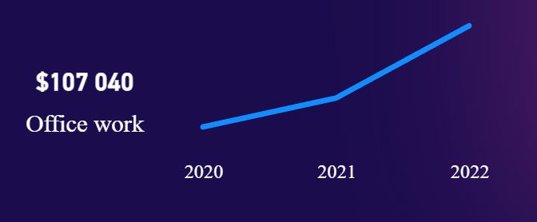
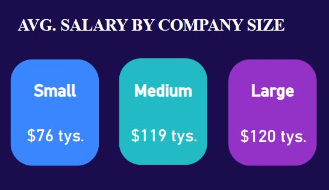
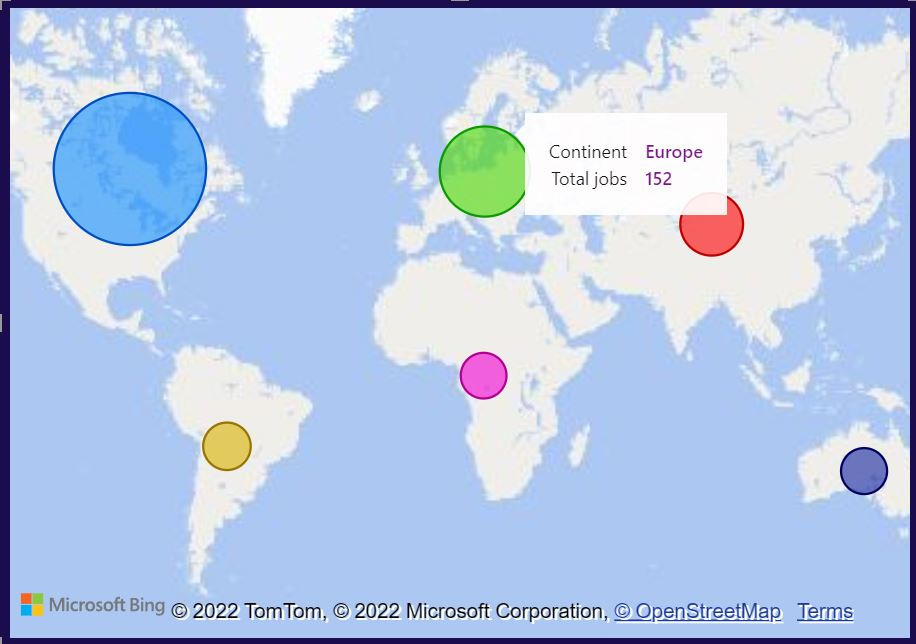
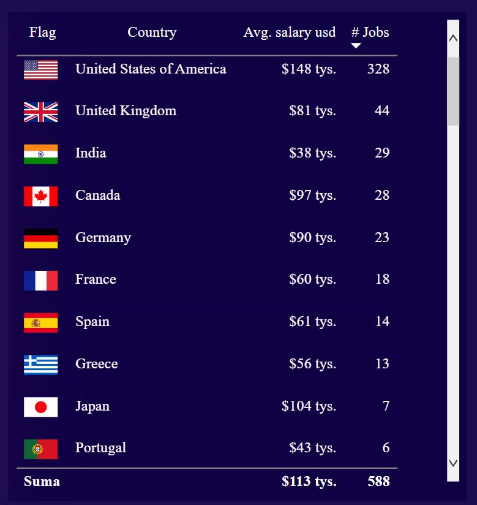
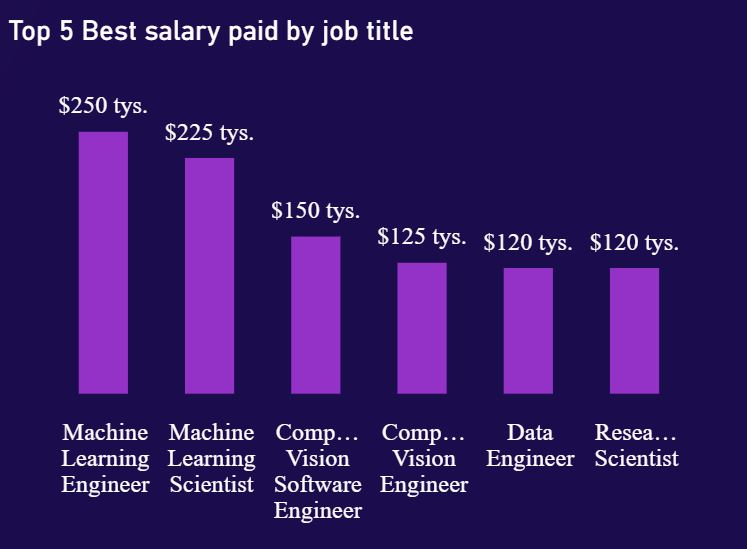

Explanations of particular visualizations
Number in circle show us percent of working model that is on right side on visualization. Filling of yellow color on ring depends on number percent.
Card shows averange $ salary with filter by appropriate model of working. Line chart shows trend of working model on left.
I gave every card appropriate filter by company size.
Map show us how many jobs we have by continent. It can be using as a filter at whole dashboard if we are interested in data from particular continent.
Slicer. This is very important what level experience we want to see. Average data can be misleading for juniors if we have also salary for executives.
Overall table view of countries with averange salary and amount of jobs. For flags I changed data category to URL address.
Filter set on top 5 and Y-axis on max value.